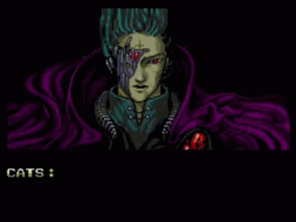

$AYBA
All Your Base Are Belong To US
In the vibrant sprawl of the digital cosmos, where memes flourish like galaxies in an ever-expanding universe, a legendary artifact from the dawn of internet culture began pulsating with newfound life. "All your base are belong to us," the ancient meme prophesied, resurfaced with a vengeance, not just to claim its place in the halls of digital lore but to conquer a new frontier: the Base Chain.
The Base Chain, originally conceived as the zenith of blockchain technology, was about to undergo a transformation so profound, it would forever blur the lines between financial ledger and cultural lexicon. This wasn't just any blockchain; it was about to become the blockchain, a living memeplex with "All Your Base" at its beating heart. It all began when a cabal of meme sorcerers, digital necromancers who dwelled in the shadowy recesses of the internet, decided it was time for "All Your Base" to transcend its meme status. They saw the Base Chain, with its sturdy, yet uninspired infrastructure, as the perfect vessel for their machinations. And so, under the cloak of digital anonymity, they set their plan into motion.
The first strike was subtle: a smart contract here, a token there, each inscribed with the sacred words of the meme. These were not mere transactions; they were incantations, weaving the essence of "All Your Base" into the very fabric of the Base Chain.
As the meme's influence grew, the once-serene blockchain began to exhibit peculiar behaviors. Transactions randomly redirected to display the iconic phrase, smart contracts executed with a flourish of 8-bit graphics, and every new block mined echoed the anthem of conquest. The Base Chain was no longer a mere technology; it had become a beacon of memetic domination.
But the true chaos began with the introduction of FUD (Fear, Uncertainty, and Doubt) – not the traditional weapon of market manipulation, but a literal FUD token, engineered by the meme sorcerers as the ultimate homage to "All Your Base." The FUD token was unpredictable, its value oscillating wildly in response to the number of "All Your Base" references made across the internet.
This turned trading into a game of meme mastery, where the most cultured in the art of internet lore could thrive. The financial world watched in bewildered amusement as the Base Chain transformed. What was once a staid platform for transactions became the epicenter of a digital carnival, a wild blend of finance, culture, and unabashed silliness.
And as the Base Chain teetered on the brink of becoming a full-blown memetic singularity, its creators looked on, a mix of horror and pride in their eyes. They had unleashed the power of the meme, and in doing so, they had changed the face of blockchain forever.
The "All Your Base" takeover was complete. The meme had not just found a new home; it had conquered a realm, proving once and for all that in the digital age, culture is currency, humor is power, and no base is safe from being belonged to us.